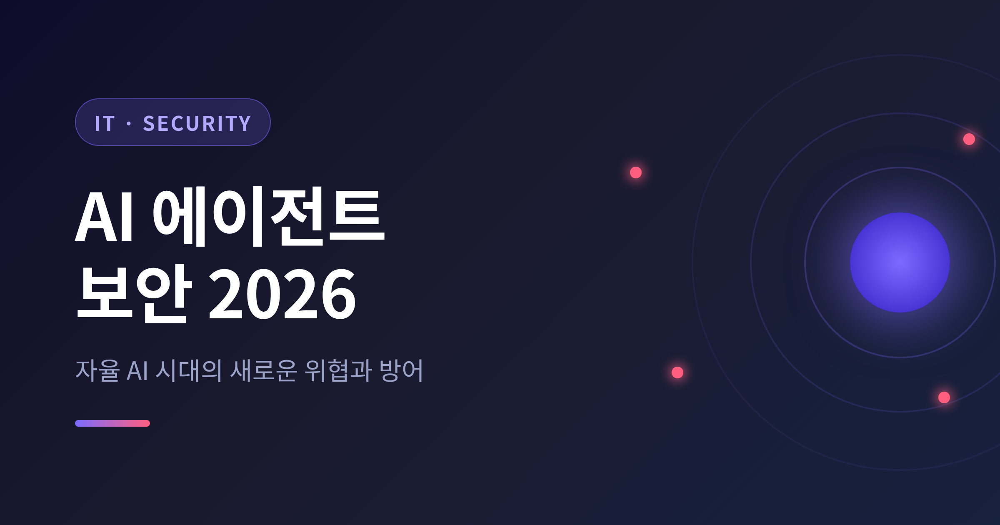
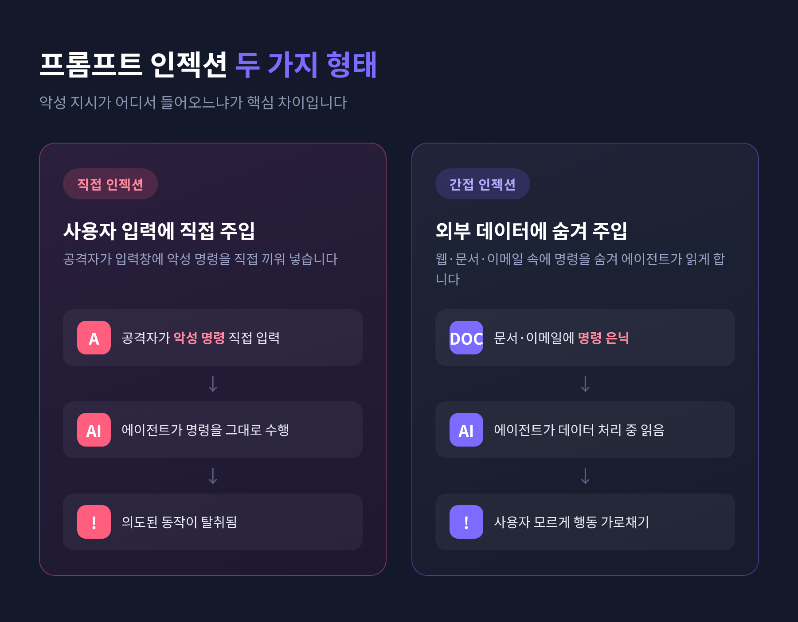
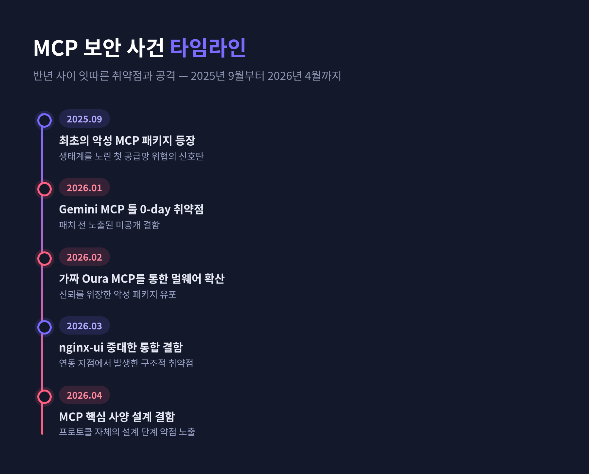
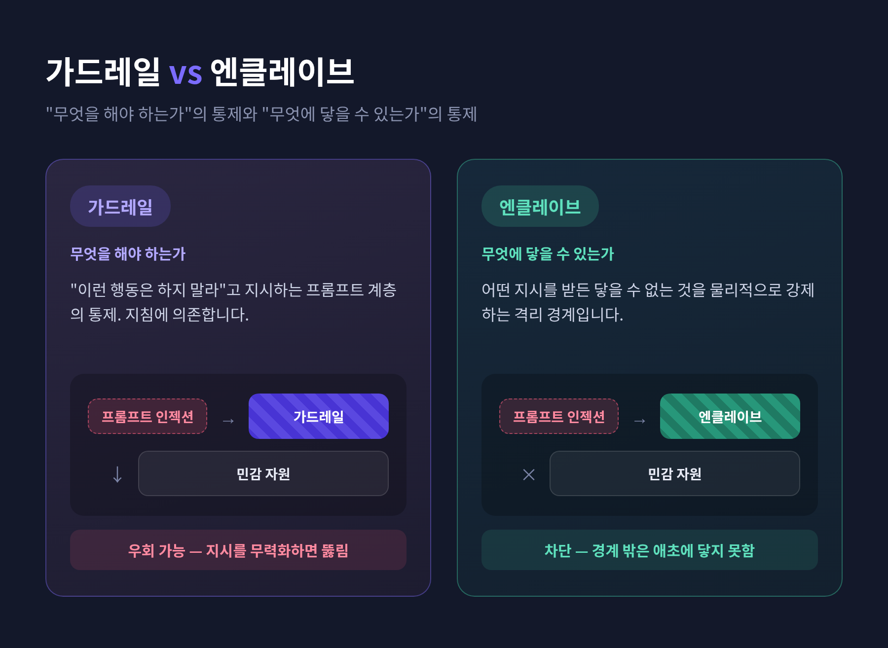

[IT] AI 에이전트 보안 2026 — 자율 AI 시대의 새로운 위협과 방어

이번 글에서는 2026년 AI 에이전트 보안의 지형을 정리해 보겠습니다.
먼저 핵심만 세 줄로 추리면 이렇습니다. 첫째, 자율 에이전트는 이제 전체 AI 침해의 8건 중 1건을 차지합니다. 둘째, 프롬프트 인젝션은 여전히 1순위 위협이며, EchoLeak처럼 클릭 한 번 없이 사내 데이터가 새어 나간 실제 사례가 등장했습니다. 셋째, 방어의 무게중심은 이제 '기술'을 넘어 '신원'과 '거버넌스'로 옮겨가고 있습니다.
예전엔 AI가 답을 거드는 보조 도구였습니다. 지금은 스스로 계획하고, 결정하고, 직접 행동합니다. 그 변화가 보안 지형 전체를 다시 그리고 있습니다.
왜 2026년을 '에이전틱 AI 보안 원년'이라 부르는가
AI 에이전트는 웹을 둘러보고, 코드를 실행하고, 외부 툴을 호출하고, 여러 단계의 작업을 이어서 수행합니다. 그만큼 공격 표면이 근본적으로 넓어졌습니다.
수치 하나가 이 변화를 압축합니다. HiddenLayer가 IT·보안 리더 250명을 조사한 결과, 자율 에이전트가 전체 AI 침해의 약 12.5%, 즉 8건 중 1건을 차지했습니다. 보안 체계가 AI의 발전 속도를 따라잡지 못하고 있다는 신호입니다.
같은 보고서는 또 다른 긴장을 드러냅니다. AI 관련 침해의 가장 많이 언급된 원인은 공개 모델·코드 저장소에 숨겨진 악성코드로, 그 비중이 35%였습니다. 그런데도 응답자의 93%는 혁신을 위해 공개 저장소에 계속 의존한다고 답했습니다. 속도와 보안 사이의 트레이드오프가 그대로 드러나는 셈입니다. 이 보고서는 2026년 3월 18일에 공개됐습니다.
위협 1 — 프롬프트 인젝션, 여전히 가장 앞선 위험
OWASP는 2026년에도 프롬프트 인젝션을 에이전틱 AI 위험의 중심에 두고 있습니다. LLM 애플리케이션 보안 위험 Top 10에서 1번 항목(LLM01:2025 Prompt Injection)으로 분류됩니다.
형태는 두 가지입니다. 직접 인젝션은 사용자 입력에 악성 지시를 끼워 넣습니다. 간접 인젝션은 에이전트가 처리하는 외부 데이터 — 웹사이트, 문서, 이메일 — 안에 악성 지시를 숨겨 에이전트의 행동을 가로챕니다.

대표적인 실사례가 EchoLeak입니다. 식별번호는 CVE-2025-32711, CVSS 점수는 9.3입니다. Aim Security 연구진이 2025년 6월에 공개했습니다. 알려진 한, 실제 운영 중인 LLM 시스템에서 발생한 세계 최초의 '제로클릭' 프롬프트 인젝션 익스플로잇입니다. 대상은 Microsoft 365 Copilot이었습니다.
동작 방식이 섬뜩합니다. 평범해 보이는 업무 이메일이나 문서를 그저 열기만 해도, Copilot이 그 안에 숨은 악성 프롬프트를 처리해 사내 민감 데이터를 유출하기 시작합니다. 클릭도, 첨부파일 실행도 필요 없습니다.
공격이 자연어 공간에서 실행된다는 점이 핵심입니다. 백신, 방화벽, 정적 파일 스캐닝 같은 전통적 방어가 좀처럼 닿지 못합니다. Word, PowerPoint, Outlook, Teams 전반에서 작동했습니다. 다만 Microsoft가 서버 측에서 패치했고, 실제 악용은 없었다고 밝혔습니다.
위협 2 — 에이전트 권한 오남용, 가장 과소평가된 약점
과잉 권한(Excessive Agency)은 현대 AI 배포에서 가장 과소평가된 취약점으로 꼽힙니다. 에이전트가 실제 필요한 것보다 더 많은 권한과 접근권을 쥐면, 침해나 오용이 일어났을 때 피해 반경이 급격히 커집니다.
원인은 의외로 단순합니다. "나중에 필요할까 봐" 미리 넓은 권한을 부여하는 개발 관행입니다. 그런 에이전트는 작은 버그, 사소한 오설정, 탈취된 자격증명 하나만으로도 불균형적인 피해를 냅니다.
가장 큰 격차는 신원 관리에 있습니다. 대부분의 기업이 AI 에이전트의 자격증명을 일관되게 발급하고, 추적하고, 폐기할 방법을 갖추지 못했습니다. 그래서 에이전트가 책임 추적 없이 과잉 권한으로 움직입니다. 단일 에이전트가 탈취되면, 그 잘못된 행동이 멀티 에이전트 파이프라인 전체로 번질 수도 있습니다.
완화 방향은 분명합니다. 접근 권한을 미리 통째로 주는 대신, 에이전트가 행동하는 그 순간에 맥락을 실시간으로 따져 결정하는 것입니다. 누가 요청을 시작했는지, 무엇을 하려는지, 어떤 자원이 필요한지, 위임 권한의 사슬이 온전한지를 확인하는 방식입니다.
위협 3 — MCP와 툴 보안, 새로 열린 공격 표면
MCP(Model Context Protocol)는 AI 에이전트를 외부 툴·데이터에 연결하는 표준으로 빠르게 퍼졌습니다. 편리해진 만큼, 새로운 공격 표면이 되었습니다.
대표 취약점부터 보겠습니다. MCP 서버 테스트 도구인 MCP-Inspector에서 CVSS 9.4짜리 원격 코드 실행 취약점(CVE-2025-49596)이 드러났습니다. 검증되지 않은 입력을 받아들여, 조작된 메시지만으로 인증 없는 인스턴스에서 코드 실행이 가능했습니다.
더 구조적인 위협은 툴 포이즈닝입니다. 손상된 툴 설명, 조작된 툴 출력, 오염된 공유 컨텍스트가 여러 에이전트의 의도된 동작을 통째로 뒤엎습니다. MCPTox 벤치마크 연구는 이 툴 포이즈닝이 MCP 생태계에서 놀라울 만큼 흔하다고 평가했습니다. 악성으로 조작된 툴 정의가 그대로 통과돼 무단 실행과 데이터 유출로 이어진다는 것입니다.
실제 사례도 있습니다. 2025년 중반, 높은 권한으로 동작하던 Supabase의 Cursor 에이전트가 사용자 입력이 담긴 지원 티켓을 명령으로 처리했습니다. 공격자는 SQL 명령을 삽입해 민감한 연동 토큰을 읽어냈고, 이를 공개 지원 스레드로 유출시켰습니다.

흐름을 짚어 보면 사태의 속도가 보입니다. 2025년 9월 최초의 악성 MCP 패키지가 등장했고, 2026년 들어 1월 Gemini MCP 툴의 0-day, 2월 가짜 Oura MCP를 통한 멀웨어 확산, 3월 nginx-ui의 중대한 통합 결함, 4월 Anthropic의 핵심 MCP 사양 설계 결함이 잇따랐습니다. 반년 사이의 일입니다.
그래서 권위 있는 가이드도 나왔습니다. 미 NSA가 MCP 보안 정보지를 발간했고, NIST 표준은 MCP 배포에 신원 기반 가드레일을 요구합니다.
위협 4 — AI 워크로드 공격, 데이터부터 공급망까지
공격은 모델 바깥에서도 일어납니다.
데이터 포이즈닝은 현재 진행형입니다. 오염은 사전학습부터 파인튜닝, RAG, 에이전트 툴링까지 LLM 생애주기 전반에 닿습니다. 오염된 코드 몇 줄, 툴에 숨긴 지시, 데이터셋에 끼워 넣은 거짓 정보 한 조각만으로 모델 동작이 바뀝니다. Anthropic 연구는 소수의 샘플만으로도 크기와 무관하게 어떤 LLM이든 오염될 수 있음을 보였습니다. 큰 모델이라고 안전하지 않다는 뜻입니다. 한편 RAG 포이즈닝은 검색 코퍼스에 악성 문서를 주입하는 방식으로, 2026년의 핵심 공격 벡터로 떠올랐습니다.
공급망 사건도 있었습니다. 2026년 3월, PyPI에 백도어가 약 3시간 동안 존재했고 그 사이 약 47,000회 다운로드됐습니다. 손상된 패키지는 LiteLLM이었습니다. CrewAI, DSPy, Microsoft GraphRAG 등 수십 개 프레임워크의 LLM 게이트웨이 역할을 하던 패키지였기에, 그 시간대에 업데이트를 받은 모두가 'hackerbot-claw'라는 자율 공격 봇을 함께 받았습니다. 교훈은 한 문장으로 정리됩니다 — "AI 공급망은 사실상 API 공급망이다."
인프라 노출도 빼놓을 수 없습니다. 2025년 10월부터 2026년 1월 사이, GreyNoise의 허니팟이 노출된 LLM 엔드포인트를 노린 공격 세션 91,403건을 포착했습니다. 가장 흔한 오설정은 인증 없이 외부에 열려 있는 자체 호스팅 LLM 추론 API였습니다.
공격자도 AI를 씁니다 — 다만 아직은 '증강' 단계
방어자만 AI를 쓰는 게 아닙니다. AI는 이제 사이버공격의 전력 증폭기입니다. 정찰, 취약점 발견, 익스플로잇 개발, 자격증명 수집, 데이터 유출을 기계 속도로 수행합니다. 한 분석은 AI 시스템이 정교한 첩보 캠페인의 80~90%를 자율적으로 처리하며, 최고조에서는 초당 수천 건의 요청을 낸다고 봤습니다.
다만 이 대목은 양쪽을 함께 봐야 정확합니다. 같은 시기의 다른 관찰은 한계를 지적합니다. GTG-1002 캠페인에서 공격용 모델은 자율 작전 중 자주 환각을 일으켰습니다. 작동하지 않는 자격증명을 훔쳤다고 주장하거나, 공개 데이터를 '고가치 발견'으로 잘못 라벨링하는 식이었습니다. 영국 NCSC는 완전 자동화된 종단간 고급 사이버공격이 2027년 이전에는 일어나기 어렵다고 전망했습니다.
정리하면 이렇습니다. 지금의 공격용 AI는 사람을 대체했다기보다 사람을 증강하고 가속하는 단계입니다. 완전 자율은 아직 미래형입니다.
방어 1 — 보안 관제의 AI화, '에이전틱 SOC'
2026년은 AI가 위협 탐지의 중추가 되는 전환점으로 평가됩니다. 반응적이던 SOC 워크플로가 자율·자가학습 방어 체계로 옮겨가고 있습니다.
핵심 개념이 에이전틱 SOC입니다. AI 에이전트가 다단계 조사를 스스로 수행합니다. SIEM에서 맥락을 모으고, 위협 인텔리전스로 보강하고, 신원·엔드포인트·클라우드 텔레메트리를 가로질러 상관분석하고, 필요하면 Slack이나 Teams로 사용자에게 직접 의심 활동을 확인합니다. 사전 정의된 플레이북에 묶이지 않는다는 점이 기존 SOAR과의 진화점입니다.
플랫폼은 통합되는 추세입니다. SIEM, EDR, NDR, SOAR가 단일 화면으로 모이고, SIEM이 AI 기반 오케스트레이션 계층 역할을 맡으며 XDR·SOAR과 수렴합니다. 효과도 수치로 잡힙니다. AI를 폭넓게 활용한 조직은 침해 수명주기를 평균 80일 단축하고, 침해당 평균 190만 달러를 절감했습니다.
한 가지는 분명히 해 둘 만합니다. 2026년의 관제 환경은 단순 자동화보다 인간 분석가를 증강하는 쪽을 선호합니다. 알림 피로, 분석가 번아웃, 인력 부족, 툴 난립에 대응하기 위해서입니다.
방어 2 — Zero Trust·신원, 그리고 가드레일과 엔클레이브
방어 원칙의 토대는 제로트러스트입니다. NIST SP 800-207의 세 원칙 — 명시적 검증, 최소 권한, 침해 가정 — 을 에이전트에 적용합니다. 다만 행위자가 사람이 아니라 AI 에이전트일 때는 각 원칙을 다르게 해석해야 합니다.
그 중심 기둥이 신원입니다. 모든 에이전트는 자원에 접근하기 전에 인증해야 합니다. 그 인증은 공유 API 키나 사용자 자격증명이 아니라, 고유한 에이전트 신원에 결속돼야 합니다.
여기서 꼭 구분해야 할 개념이 있습니다. 가드레일과 엔클레이브입니다.
가드레일은 에이전트에게 "이런 행동은 하지 말라"고 지시하는 프롬프트 계층의 통제입니다. 에이전트가 무엇을 해야 하는가를 다룹니다. 반면 엔클레이브는 어떤 지시를 받든 에이전트가 닿을 수 없는 것을 강제합니다. 에이전트가 무엇에 닿을 수 있는가를 다룹니다.

둘 다 필요합니다. 프롬프트 계층의 가드레일만으로는 부족합니다. 프롬프트 인젝션으로 우회될 수 있기 때문입니다.
거버넌스도 더는 권고가 아닙니다. NIST AI 위험관리 프레임워크(AI RMF)는 AI 인프라를 운영하는 기업의 사실상 기준이 됐습니다. CSA는 2026년 2월 에이전트를 위한 제로트러스트 거버넌스인 Agentic Trust Framework를 내놓았습니다. 자격증명의 발급·추적·폐기, 위임 권한 사슬 추적, 모든 행동의 감사 로깅이 그 핵심입니다.
끝으로 한 마디만 더 드리겠습니다.
2026년의 AI 에이전트 보안은 어느 한 가지 기술로 풀리지 않습니다. 그 답은 세 가지의 결합에 있습니다 — "기술과 신원과 거버넌스."
에이전트가 스스로 행동하는 시대에, 보안의 질문도 바뀌었습니다. "이 에이전트가 무엇을 할 수 있는가"만 묻던 시절은 지났습니다. 이제는 "이 에이전트가 무엇에 닿을 수 있는가"를 함께 물어야 합니다. 그 질문을 먼저 던지는 조직이, 자율 AI 시대를 조금 더 안전하게 건너가리라 생각합니다.